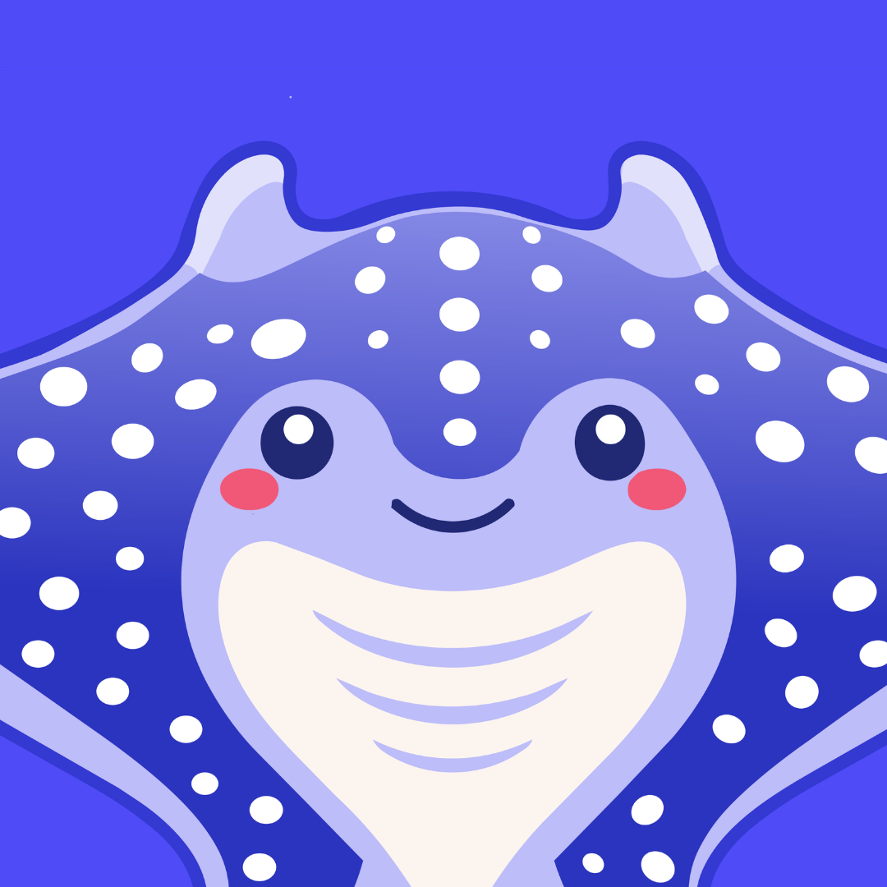
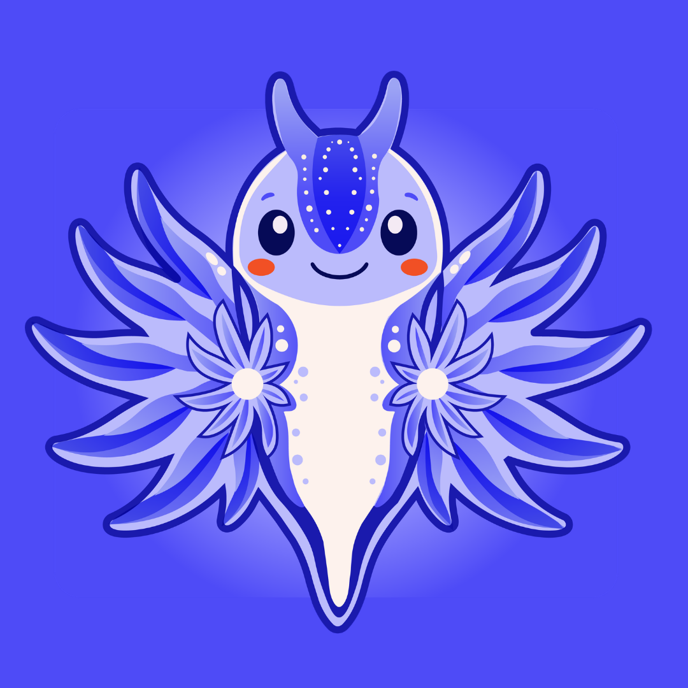
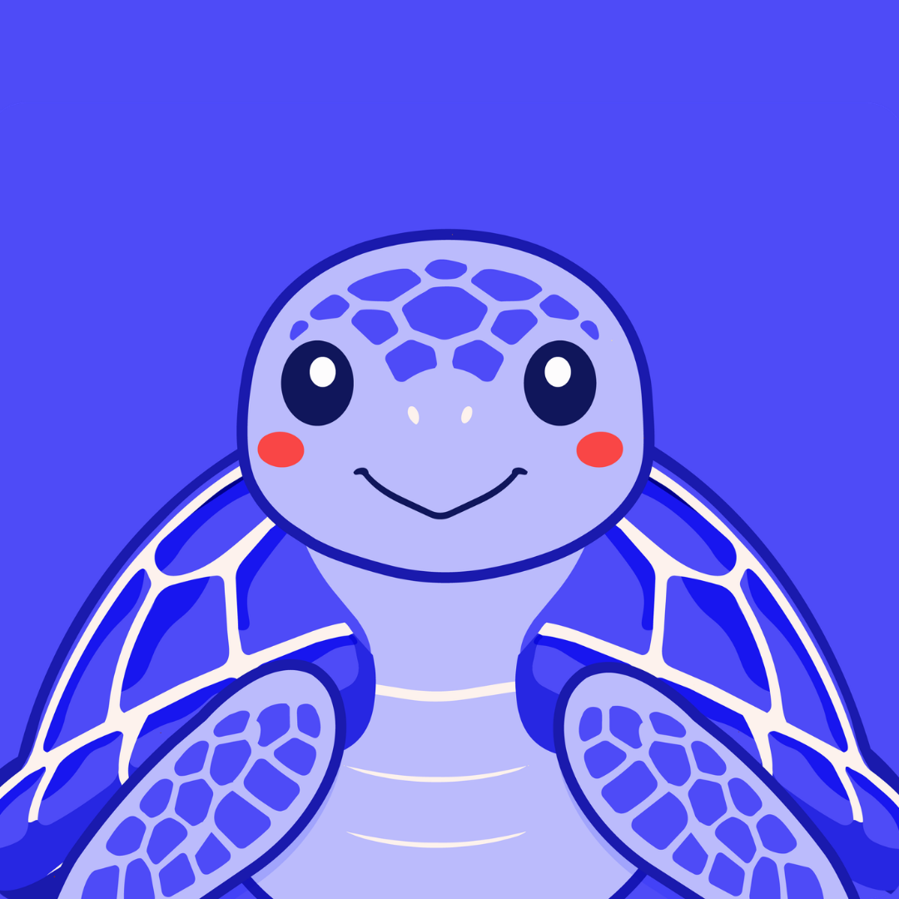

Elegí cómo querés empezar
Podés empezar con un diagnóstico gratuito beta o avanzar con una ruta más completa según el momento de tu negocio.

Diagnóstico Ordy Base
Gratis
5 cupos beta disponibles este mes.
Ideal para negocios que quieren probar Ordy y tener una primera vista clara.
- ✓ Nivel 1
- ✓ Dashboard base
- ✓ Recomendación de siguiente paso
- ✓ Prompt resumen
- ✓ 3 mensajes personalizados

Ruta Ordy Completa
₡43.000 beta
Precio regular: ₡67.000
Ideal para negocios que ya están funcionando y quieren ordenar procesos, números, clientes y próximos pasos.
- ✓ Niveles 2 al 6
- ✓ Dashboard actualizado por niveles
- ✓ 2 llamadas estratégicas
- ✓ Seguimiento por WhatsApp
- ✓ Recomendaciones accionables

Radar Ordy
₡12.000
🔒 Solo disponible después de completar los niveles.
Ideal para negocios que sienten que algo se está escapando, pero no tienen claro dónde.
- ✓ Análisis de fugas en tiempo, dinero, energía, clientes, operación, claridad y rentabilidad
Mejor valor

Combo Beta Ordy
₡50.000 beta
Ideal para negocios que quieren una experiencia más completa desde el inicio.
- ✓ Ruta Ordy Completa
- ✓ Radar Ordy
- ✓ Dashboard completo
- ✓ Seguimiento por WhatsApp
- ✓ 2 llamadas estratégicas